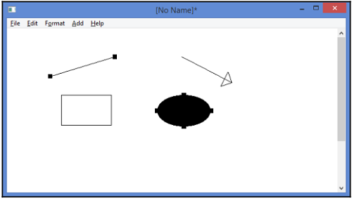

⇐Глава 3. Создание приложения "Тетрис"
В этой главе мы разрабатываем программу, способную рисовать линии, стрелки, прямоугольники и эллипсы. Приложение можно рассматривать как более продвинутую версию приложения Circle. Как и в случае с круговым приложением, у нас есть список фигур, и мы ловим мышку пользователя. действия. Однако есть четыре вида фигур: линии, стрелки, прямоугольники и эллипсы. Они определены в иерархии классов, аналогичной, но более продвинутой, чем иерархия в игре Тетрис. Кроме того, мы также вводим вырезание, копирование, вставку, управление курсором, и обработка реестра:
Пользователь может добавлять новые фигуры, перемещать одну или несколько фигур, изменять фигуры, хватая их конечных точек, помечайте и снимайте пометки с фигур, нажимая кнопку мыши и клавишу Ctrl, и отметьте несколько фигур, заключив их в прямоугольник. Когда цифра отмечена, она становится аннотированы маленькими черными квадратами. Пользователь может изменить форму фигуры, взяв один из квадратов. Пользователь также может перемещать фигуру, хватаясь за другую часть фигура.
Функция MainWindow в этом приложении очень похожа на функцию в главе 3, Создание Приложение Тетрис; он устанавливает имя приложения и создает главное окно документа:
#include "..\\SmallWindows\\SmallWindows.h"
#include "DrawFigure.h"
#include "LineFigure.h"
#include "ArrowFigure.h"
#include "RectangleFigure.h"
#include "EllipseFigure.h"
#include "TextFigure.h"
#include "DrawDocument.h"
void MainWindow(vector<String> /* argumentList */, WindowShow windowShow) {
Application::ApplicationName() = TEXT("DrawFigure");
Application::MainWindowPtr() = new DrawDocument(windowShow);
}
Класс DrawDocument расширяет структуру StandardDocument, подобно кругу заявление. Он улавливает события мыши, отменяет методы файла, реализует вырезание, копирование, и вставить, а также обработку курсора:
class DrawDocument : public StandardDocument {
public:
DrawDocument(WindowShow windowShow);
~DrawDocument();
Как и в случае с круговым приложением, мы ловим действие мыши с помощью OnMouseDown, OnMouseMove и OnMouseUp. Однако в этом приложении мы также ловим двойной щелчок с помощью метода OnDoubleClick. Когда пользователь дважды щелкает фигуру, она предпринимает индивидуальные действия:
void OnMouseDown(MouseButton mouseButtons, Point mousePoint,
bool shiftPressed, bool controlPressed);
void OnMouseMove(MouseButton mouseButtons, Point mousePoint,
bool shiftPressed, bool controlPressed);
void OnDoubleClick(MouseButton mouseButtons, Point mousePoint,
bool shiftPressed, bool controlPressed);
void OnMouseUp(MouseButton mouseButtons, Point mousePoint,
bool shiftPressed, bool controlPressed);
Метод OnDraw вызывается, когда необходимо перерисовать клиентскую область окна. Он привлекает цифры и прямоугольник, охватывающий фигуры, если пользователь делает отметку фигуры с прямоугольником:
void OnDraw(Graphics& graphics, DrawMode drawMode) const;
Метод ClearDocument вызывается, когда пользователь выбирает пункт меню New, Метод ReadDocumentFromStream вызывается, когда они выбирают пункт меню Open, и метод WriteDocumentToStream вызывается, когда они выбирают меню Сохранить или Сохранить как элемент:
void ClearDocument();
bool WriteDocumentToStream(String name, ostream& outstream) const;
Каждый рисунок имеет целочисленное значение идентификатора, которое записывается WriteDocumentToStream и считывается методом ReadDocumentFromStream, чтобы решить, какая цифра должна быть создан. Учитывая значение идентификатора, метод CreateFigure создает новую фигуру:
bool ReadDocumentFromStream(String name, istream& instream);
DrawFigure* CreateFigure(FigureId figureId) const;
В этом приложении мы представляем функции вырезания, копирования и вставки. CopyGeneric вызывается, когда пользователь выбирает пункт меню Вырезать или Копировать в меню Правка и Метод PasteGeneric вызывается, когда пользователь выбирает пункт меню «Вставить». в StandardDocument framework, есть методы вырезания, копирования и вставки ASCII а также текст в Юникоде. Однако мы не используем их в этом приложении:
bool IsCopyGenericReady(int /* format */) const;
void CopyGeneric(int format, InfoList& infoList) const;
void PasteGeneric(int format, InfoList& infoList);
Метод CopyEnable возвращает true, если информация готова к копированию. В этом случае Пункты меню Вырезать, Копировать и Удалить включены. В этом приложении мы не отменяем PasteEnable, поскольку платформа StandardDocument проверяет, есть ли буфер памяти в глобальном буфере обмена, пригодный для вставки. Вызывается метод OnDelete когда пользователь выбирает пункт меню Удалить:
bool CopyEnable() const;
void OnDelete();
Как и в случае с круговым приложением, у нас есть набор слушателей, хотя в этот случай. Каждый слушатель добавляется в меню в конструкторе. В отличие от круга приложение, мы также используем методы включения: методы, которые вызываются перед пунктом меню становится видимым. Если методы возвращают false, пункты меню становятся недоступными и отображаются серым цветом. Если пункт меню подключен к ускорителю, ускоритель также отключается. Мы поместите элементы Modify, Color и Fill в меню Modify, а Line, Arrow, Элементы Rectangle и Ellipse в меню Add:
DEFINE_BOOL_LISTENER(DrawDocument, ModifyEnable)
DEFINE_BOOL_LISTENER(DrawDocument, ModifyRadio)
DEFINE_VOID_LISTENER(DrawDocument, OnModify)
DEFINE_BOOL_LISTENER(DrawDocument, ColorEnable)
DEFINE_VOID_LISTENER(DrawDocument, OnColor)
DEFINE_BOOL_LISTENER(DrawDocument, FillEnable)
DEFINE_BOOL_LISTENER(DrawDocument, FillCheck)
DEFINE_VOID_LISTENER(DrawDocument, OnFill)
DEFINE_BOOL_LISTENER(DrawDocument, LineEnable);
DEFINE_BOOL_LISTENER(DrawDocument, ArrowEnable);
DEFINE_BOOL_LISTENER(DrawDocument, RectangleEnable);
DEFINE_BOOL_LISTENER(DrawDocument, EllipseEnable);
DEFINE_BOOL_LISTENER(DrawDocument, LineRadio);
DEFINE_BOOL_LISTENER(DrawDocument, ArrowRadio);
DEFINE_BOOL_LISTENER(DrawDocument, RectangleRadio);
DEFINE_BOOL_LISTENER(DrawDocument, EllipseRadio);
DEFINE_VOID_LISTENER(DrawDocument, OnLine);
DEFINE_VOID_LISTENER(DrawDocument, OnArrow);
DEFINE_VOID_LISTENER(DrawDocument, OnRectangle);
DEFINE_VOID_LISTENER(DrawDocument, OnEllipse);
В этом приложении мы также вводим управление курсором. Метод UpdateCursor устанавливает курсор к соответствующему виду в зависимости от того, создает ли пользователь, изменяет, или движущиеся фигуры:
void UpdateCursor();
Центральным моментом этого приложения является его режим: метод applicationMode отслеживает действий, когда пользователь нажимает левую кнопку мыши. Он поддерживает следующие режимы:
Обратите внимание, что метод applicationMode актуален только до тех пор, пока пользователь нажимает левую кнопка мыши. Как только они отпускают кнопку мыши, метод applicationMode становится всегда Idle:
private:
enum ApplicationMode {Idle, ModifySingle, MoveMultiple, ModifyRectangle};
ApplicationMode applicationMode = Idle;
Когда метод applicationMode удерживает режим ожидания, приложение ожидает дальнейший ввод от пользователя. Поле actionMode определяет следующее действие, которое может содержать следующие значения:
enum ActionMode {Modify, Add};
ActionMode actionMode = Add;
FigureId addFigureId = LineId;
Позже в этой главе мы встретимся с такими выражениями, как в режиме изменения и в Добавить. mode, которые относятся к значению переменной actionMode: Modify или Add.
Поля nextColor и nextFill содержат цвет фигуры и статус заливки (в случае прямоугольник или эллипс), соответственно, следующего добавляемого рисунка:
Color nextColor;
bool nextFill;
Подобно приложению круга, когда пользователь добавляет или изменяет фигуру, нам нужно сохранить предыдущая позиция мыши в методе prevMousePoint, чтобы отслеживать расстояние, на которое была перемещена мышь с момента последнего действия мыши:
Point prevMousePoint;
Когда метод applicationMode содержит значение ModifySingle, фигура модифицированный всегда помещается в начало списка указателей фигур (figurePtrList [0]) для того, чтобы он появился поверх цифр. Когда метод applicationMode содержит в режиме ModifyRectangle метод insideRectangle отслеживает прямоугольник прилагая рисунки:
Rect insideRectangle;
Статическая константа DrawFormat используется для идентификации данных, которые нужно вырезать, скопировать или вставить. глобальный буфер обмена. Он произвольно установлен на 1000:
static const unsigned int DrawFormat = 1000;
Когда пользователь добавляет и удаляет фигуры из чертежа, фигуры динамически созданы и удалены; их адреса хранятся в списке figurePtrList. В Класс DynamicList - это класс Small Windows, который является более продвинутой версией C ++. список стандартных классов и вектор.
Значения списка рисунков являются указателями на класс DrawFigure, который является корневым классом иерархия фигур, используемая в этом приложении (описанная в главе 5, Иерархия фигур). В отличие от приложений круга и Тетриса в предыдущих главах, мы не храним рисунок. объекты прямо в списке, а точнее их указатели. Это необходимо, поскольку мы используем класс иерархия сохраняется с чисто виртуальными методами, что делает класс DrawWindow абстрактным. и невозможно сохранить непосредственно в списке. Это также необходимо для того, чтобы воспользоваться динамическое связывание иерархии классов:
DynamicList<DrawFigure*> figurePtrList;
};